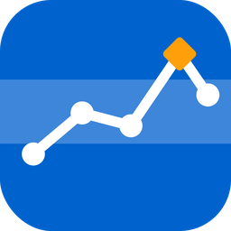

Coagulation Tracker
INR- und Dosierschema-Tagebuch
Für Menschen, die ihre orale Antikoagulation (Phenprocoumon oder Acenocoumarol) nach einer Selbstmanagement-Schulung selbst führen: INR-Werte, das eigene Dosierschema und jede Tabletteneinnahme an einem Ort. Mit Erinnerungen, Verlauf, PDF-Bericht für die Ärztin oder den Arzt und Import aus dem Papiertagebuch.
Alle Daten bleiben auf Ihrem iPhone. Keine Werbung, kein Konto, kein Tracking. Gratis.
Die App zeichnet nur auf, was Sie eingeben. Sie berechnet, empfiehlt oder ändert keine Dosis und gibt keine medizinischen Ratschläge.
INR and dose plan logbook
For people who manage their oral anticoagulation (phenprocoumon or acenocoumarol) themselves after self-management training: INR values, your own dose plan and every tablet intake in one place, with reminders, history, a PDF report for your doctor and import from your paper diary.
All data stays on your iPhone. No ads, no account, no tracking. Free.
The app only records what you enter. It does not calculate, recommend or change any dose and gives no medical advice.
Support / Hilfe · Datenschutz / Privacy
Fabian Byland, Juraweg 8, 5022 Rombach, Schweiz · slaxx@gmx.ch